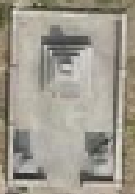
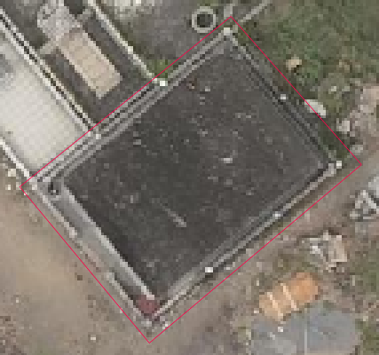
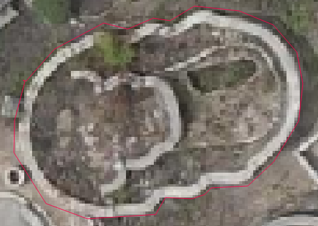
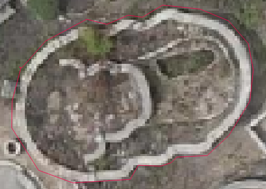

以南山公墓高解析正射影像進行墓塚點位#
過去田野調查使用手機進行墓塚定位，在尚未有高解析正射影像可供識別墓塚，高密集的公墓之中，手機定位無法精準標記墓塚正確位置。本次以過去實地拍攝照片辨別高解析度影像上的位置，再使用QGIS校正南山公墓「新坪」墓塚點位。
新坪推測範圍#
Tip
新坪一詞為南山公墓內，其中一區域的地名，過去並無詳細文獻記載確切位置，以下透過地形、文獻、訪談及現地觀察所得出結果，再透過QGis製作成地圖，以推測新坪範圍
1.新坪一詞依地名學解釋字義，推測為較晚於周圍墓地才有墓葬行為的平坦高地。
2.1943年《民俗臺灣》〈臺南郊外塚地考〉，提及新坪位於鄭成功的二姬曾氏、蔡氏墓地所在處。[1]
3.1953年《臺南文化》〈臺灣明墓考〉，提及洪夫人墓在日治時期從江和里跎仔穴遷葬北方新坪後面塚地，坐西向東。[2]
4.當地工作者稱該區為「新墓地」。
5.該區出現大量規劃整齊的日治後期墓塚，其墓葬地景不同於傳統漢式墓區。
{kind=link}
{kind=link}
墓塚辨識#
對於南山公墓不熟悉或從未去過公墓的使用者，在使用南山公墓高解析正射影像時，或許難以從俯視角度理解墓塚實際樣貌，藉由本次進行墓塚點位重新校正的機會，以實地拍攝照片辨別航拍圖上的位置，從中整理幾種辨識方式及墓塚形制。
1.漢式墓：為臺灣公墓中最常見的形制，沿襲明清時期漢人移民的墓葬習慣，大略辨別方式可從寬版墓碑（俯視角度較難以辨識）、墓手、墓桌、墓肩、墓龜、墓埕、后土、金爐等構件，，以下列舉幾種案例
此門墓面積小，構造較簡易，可辨識出墓手、墓肩/面匡及墓龜。
{kind=link}

此門墓雖然面積不大，但可辨識構件多，包含墓手、墓肩/面匡、墓龜、墓桌、墓埕、后土、金爐，以及墓龜後方增設的假後宅
{kind=link}


此門墓規模較大，除了有墓手、墓肩/面匡、墓龜、墓桌、后土、金爐，墓埕使用藍紅兩色馬賽克磁磚區分兩階，外側增設外墓環，連結墓埕，形成墓塚界限、排水等功能。
{kind=link}


2.日式墓：日本受佛教葬儀習俗影響，演進成以三疊石構造為基礎的墓塚形制，與傳統漢式墓最大差別於使用火葬而沒有墓龜。
{kind=link}

3.漢日混合：臺灣在日治時期受到日本文化影響，使得墓塚形制產生變化，然而殖民政策並未能徹底改變原有的墓葬習俗，出現以日式墓塚為基礎，保留原有漢式墓塚構件，亦或是戰後仍沿續日式風格，形成臺灣獨有特色的墓塚形制。
此門墓在墓碑處保有日式三疊石，後方增設墓龜，前方增設墓桌、金爐及后土。
{kind=link}
{kind=link}
面積較大的日式墓塚常會以外柵，作為墓塚界限，在航拍圖上呈現矩形，不同於漢式墓塚的橢圓形。
戰後仍會於漢式墓外圍增設矩形矮牆，因此無法明確指出航拍圖上所有矩形墓塚皆為日式墓，需進一步觀察墓碑處是否為三疊石構造作為辨別。
{kind=link}


4.墓厝：戰後興起的「半陽居」家族合葬墓
{kind=link}

5.從航拍圖辨別墓龜，可大致觀察覆土、水泥及遷葬後墓穴
 

{kind=link}
Note
詳細墓葬建築研究可參閱以下
廖倫光（2004）。臺灣傳統墳塚的地方性樣式與衍化研究〔碩士論文，中原大學〕
蘇峰楠 (2010) 。文化遞嬗與風格綜融：臺南市南山公墓日治時期墳墓的觀察。臺灣史學雜誌，頁91-121。
台灣好墓Beautiful Taiwan Grave臉書粉絲專頁